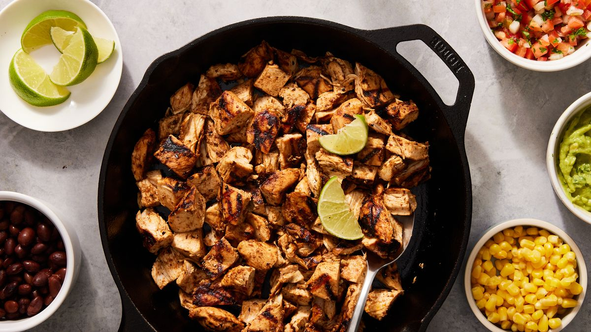

Copycat Chipotle Chicken

Chipotle Chicken
This chipotle chicken recipe requires just a small amount of effort for a
delicious and healthy meal. You can use this chicken for tacos, burritos, bowls,
or fajitas. Just add your favorite toppings such as lettuce, salsa, rice, beans,
cheese, or sour cream. Enjoy!
ingredients
- 1 ounce dried chipotle chile pepper
- 1 ounce dried ancho chile pepper
- ½ cup water
- ½ red onion, cut into small chunks
- 4 cloves garlic
- 2 teaspoons sea salt
- 1 teaspoon ground cumin
- 1 teaspoon dried oregano
- 1 teaspoon freshly ground black pepper
- 2 tablespoons olive oil
- 2 ½ pounds skinless, boneless chicken thighs
Steps:
- Place chipotle and ancho chile peppers in a shallow bowl; pour in water.
Cover the bowl and let sit at room temperature until peppers are softened, 10 to
12 hours. Drain water and remove seeds from peppers.
- Blend chile peppers, red onion, garlic, sea salt, cumin, oregano, and black
pepper in a blender until a coarse paste forms; add olive oil and blend until
marinade is smooth.
- Place chicken thighs between 2 sheets of heavy plastic on a solid, level
surface. Firmly pound chicken with the smooth side of a meat mallet to a
1/2-inch thickness.
- Place chicken in a resealable plastic bag and add marinade. Turn chicken
several times to coat. Seal bag and marinate in the refrigerator for at least 8
hours.
- Preheat an indoor grill with top and bottom plates for medium-high heat.
- Remove chicken from the bag and discard marinade.
- Place chicken on the preheated grill, close the lid, and cook until no
longer pink in the center and the juices run clear, 5 to 7 minutes. An
instant-read thermometer inserted into the center should read at least 165
degrees F (74 degrees C). Cut chicken into strips and serve warm.